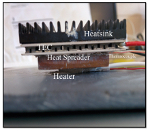
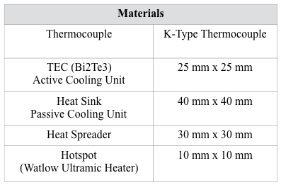
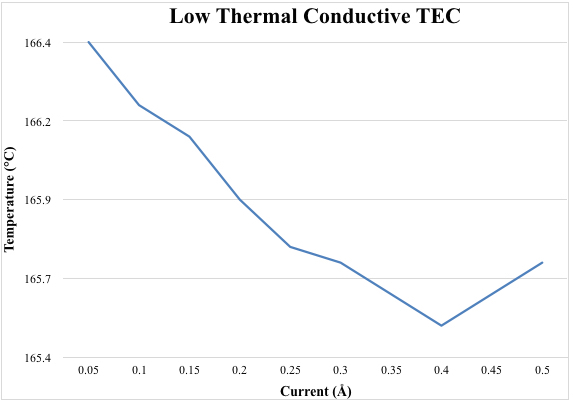
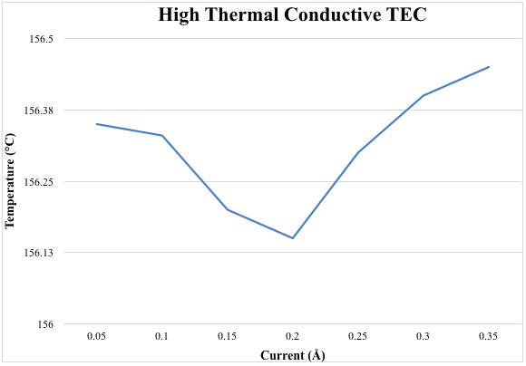
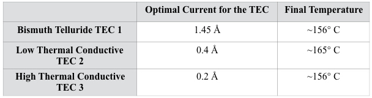

Use of Active and Passive Cooling Systems in Conjunction to Enhance Cooling Efficiency in Electric Circuits
Writer: Akash Desai
Date: Spring 2016
Citation: Desai, A. & Zebarjadi, M. (2016). Use of Active and Passive Cooling Systems in Conjunction to Enhance Cooling Efficiency in Electric Circuits. Rutgers Research Review, 1(1).
My name is Akash Desai and I am currently a sophomore in the School of Engineering pursuing a major in Mechanical Engineering. My project revolves around the topic of active and passive cooling and I worked with Dr. Mona Zebarjadi and Xiaobing Zhang at the Nanotechnology and Energy Science Lab to complete the work. I plan on continuing research throughout my junior and senior years and after graduation I plan on going to graduate school and continuing research in the field of heat transfer and thermodynamics. I also plan on continuing to be active in both the engineering and industrial communities as I pursue my career through additional research opportunities, such as internships and co-ops. This project is part of an alternate cooling technology initiative that focuses on unconventional ways of cooling electric circuits to generate various benefits to their performance. Thermal radiation is a serious problem for electrical circuits as it runs rampant throughout, thereby negatively affecting the performance of computers – thus this project is of utmost importance to the advancement of electrical technologies.

Figure 1: Final module with the TEC and the heatsink.
There are two major means of cooling electric circuitries, passive and active cooling. Passive cooling builds on the principle of conduction and convection of heat through its surrounding mediums via contact (such as a heat sink). Thus, this uses no external energy for heat dissipation. Active cooling, however, relies on an external power source for pumping the heat (such as a fans or liquid cooling systems). In the past, society has relied on either conventional ways of cooling electrical systems, or high maintenance, malfunctioning, and expensive solutions. The purpose of this investigation is to uncover the advantages of non-traditional Thermoelectric Coolers (TEC) as an active cooling agent that can potentially increase cooling capacities in such scenarios.
TEC rely on the principles of the Peltier effect to create a temperature difference between two different types of material. When a system designed to cool the circuit (a module), is supplied with appropriate voltage, it produces a temperature gradient around the semi-conductors. Such heat pumping capabilities can aid in the cooling process of various computer systems. Our hypothesis is that the use of these active and passive cooling methods in tandem can help increase the cooling efficiency in electric circuits than compared to a traditional passive cooling system.
The methodology included building the module that replicated the set-up for an electronic system integrated with the active and passive cooling units. Our set-up included the following listed below (Table 1.1).

Table 1: Schema of materials and dimensions of TEC module system used.
Our final assembled module appeared as shown in Figure 1.1. and all of the components were put together using thermal paste. The data collection procedure included running the module under a few different test scenarios. First, a heater was used to heat up the heat spreader to 200°C ,allowing us to check its sustainability at high temperatures. The first scenario included heating the sample with the passive cooling system, while the second scenario included heating the sample with the active and passive cooling systems. A heater was supplied with the same voltage in both scenarios, and final temperature was recorded. The difference in temperature between each scenario and the temperature recording without the cooling system allowed us to assess the overall cooling efficiency. For collecting data, we placed a thermocouple between the heat spreader and the TEC. The thermocouple was further connected to Labview (National Instruments), which converted the digital signals of thermocouple into decipherable data.
Figs. 2, 3, and 4 show the optimal voltage for the maximum cooling efficiency of TECs 1, 2, and 3 respectively. The tandem system, Bi2Te3, led to a cooling of 45°C , yielding a decrease in cooling efficiency by about 2% from passive cooling systems. These results contradicted our initial predictions, however, after extensive testing, we were able to trace back our problem to thermal conductive properties of the TECs. This is due to the fact that lower thermal conductivity, which Bi2Te3 is classified as, traps heat differently between the semiconductors, making the system more inefficient.

Figure 2: Temperature and current relation graph for TEC (Bi2Te3). Triangles are experimentally measured data and solid line is a second order polymer fit which explains the trend.

Figure 3: Temperature and current relation graph for Low thermal conductive TEC. Diamonds are experimentally measured data and solid line is a second order polymer fit which explains the trend.

Figure 4: Temperature and current relation graph for High thermal conductive TEC. Squares are experimentally measured data and solid line is a second order polymer fit which explains the trend.

Table 2: Schema of optimal current of the each TEC and its final cooling temperature.
We then used two half-heusler based TEC modules with identical thermoelectric power factor by with 15% difference in their thermal conductivity to show that non-traditional TECs with large thermal conductivity values are advantages in electronic cooling applications. These two TECs are labeled as low thermally conductive TEC2 and high thermally conductive TEC 3 in Table 2. After running more controlled experiments on identical TECs with varying thermal conductive properties, we came to the conclusion that higher thermal conductivity in the TECs is necessary to increase the cooling efficiency in the electric circuits.
The cooling efficiency of high thermal conductive TEC matches up with that of a Bi2Te3 TEC, However, we used our data obtained from high thermal conductive and Low thermal conductive TEC as a benchmark pattern for varying thermal conductive TEC for the proof of concept of this correlation.
We clearly see a difference of around 10° C between the use of low thermal conductive and high thermal conductive TECs in electric circuits (Table 2).
The cooling efficiency of high thermal conductive TEC matches up with that of a Bi2Te3 TEC, However, we used our data obtained from high thermal conductive and Low thermal conductive TEC as a benchmark pattern for varying thermal conductive TEC for the proof of concept of this correlation.
Thus, our hypothesis still stands correct. Due to the accuracy of comparative analyses, we now have the data to carefully fabricate an optimal TEC for electric circuits. Ultimately, our work helped us prove that TECs used in cooling electric circuits are affected by varying thermal conductive properties. Future direction for this project includes testing our module with TECs that have higher capacities of thermal conductivity and with a much more sophisticated set-up. These results show that TECs and tandem modules may be extremely effective in cooling electronic system; with more research these technologies could allow society to potentially construct more demanding electronic systems, which can be cooled properly.
References
- Zebarjadi, M. (2015). Electronic cooling using thermoelectric devices. Applied Physics Letters, 106(20), 203506.